本文是学习《MIMO-OFDM无线通信技术及Matlab实现》的笔记，主要把相关的原理、公式和代码列出来以后参考用
大尺度衰落及模型Matlab实现
当移动设备通过一段较长的距离时，会产生大尺度衰落，这种衰落通常由信号的路径损耗和由障碍物(建筑物、地形、植物等)形成的阴影衰落组成。书中提供了几种方案对大尺度衰减进行建模：
一般路径损耗模型(Friis公式)
该模型来源于Friis公式，根据公式，接收信号的功率为：
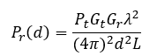
P为发射功率，G分别为发射端(t)、接收端(r)的天线增益，λ为载波波长，d为收发端之间的距离，L为与传播环境无关的系统损耗系数(实际硬件系统中的总体衰减或损耗，包括传输线、滤波器、天线等)，一般而言L>1。假设系统硬件没有损耗，则取L=1，同时根据上式计算自由空间的路径损耗：
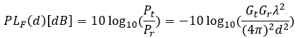
再次简化，使天线增益为1：
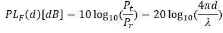
引入随着环境而改变的路径指数n，得到更为普遍的对数距离路径损耗模型：
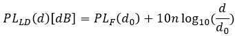
d0为参考距离，在距离接近或等于时，路径损耗和前述的自由空间路损相同。n由传输环境决定，变化范围为2~6，其中2为自由空间条件时的取值。其他典型的取值可以参考下表：
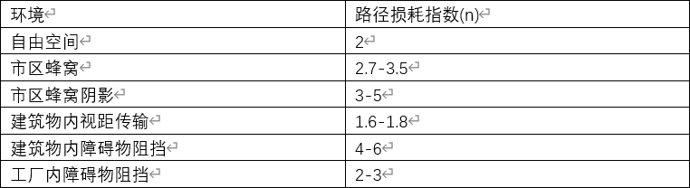
涉及更加真实的环境时，路径损耗并不是完全确定的，需要考虑一定程度的随机性，因此对数正态阴影模型将更加实用：
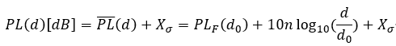
X表示均值为0，标准差为σ的高斯随机变量。
下面基于Matlab分别实现上述模型。
自由空间路径损耗模型
1 | function PL = PL_free(fc,dist,Gt,Gr) |
绘图结果如下：
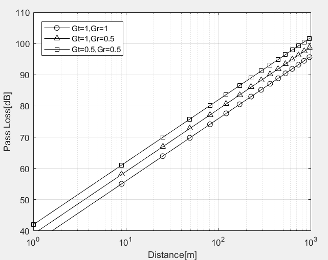
对数距离路径损耗模型
1 | function PL = PL_logdist_or_norm(fc,d,d0,n,sigma) |
代码中可以看到，该代码同时实现了对数距离和正态阴影路损模型，输入参数中包含σ时即为正态阴影模型，反正则为对数距离模型。对数距离模型的仿真图像如下：
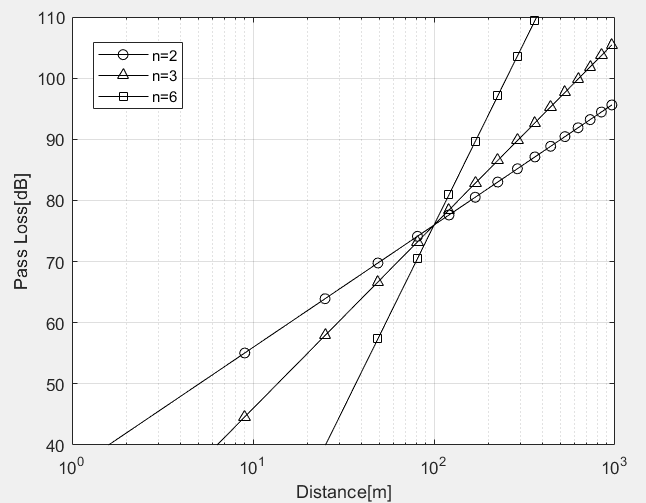
正态阴影路径损耗模型
仿真图像如下，图像展示了同样的传输条件下，三条路径的曲线。
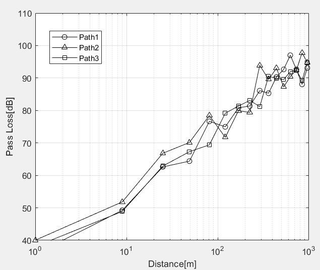
Okumura/Hata模型、
Okumura模型是通过广泛实验得到的移动通信系统信道模型，考虑了天线高度和地区覆盖类型等因素，被广泛应用。该模型的路径损耗可以表示为下式：
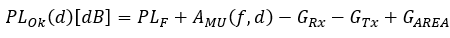
其中Gt、Gr同样为收发端天线的增益，在此处仅和天线的高度有关；Garea为具体地区的传播环境增益，Amu为频率f处的中等起伏衰减因子，这两个参数可以通过查表得到。
Hata模型是Okumura模型扩展到各种传播环境后的结果。它在城市(U)、郊区(SU)和开阔地条件下的路径损耗可以表示为：
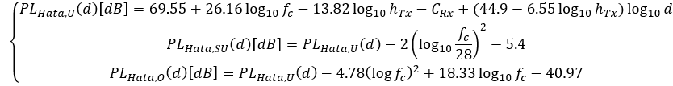
可以看到，其他条件下的路损是从城市条件下的路损修正而来，因此主要关注城市环境下的路损。其中htx为发射天线的高度，fc为载波频率，d为收发端的距离。Crx为与接收天线和载波频率有关的系数，计算方式如下：
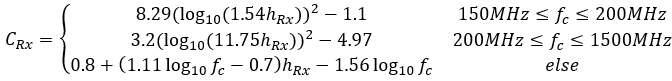
其中hrx为接收天线的高度。
仿真图像如下所示，可以看到由于障碍物较多，城市场景的路损是最大的。
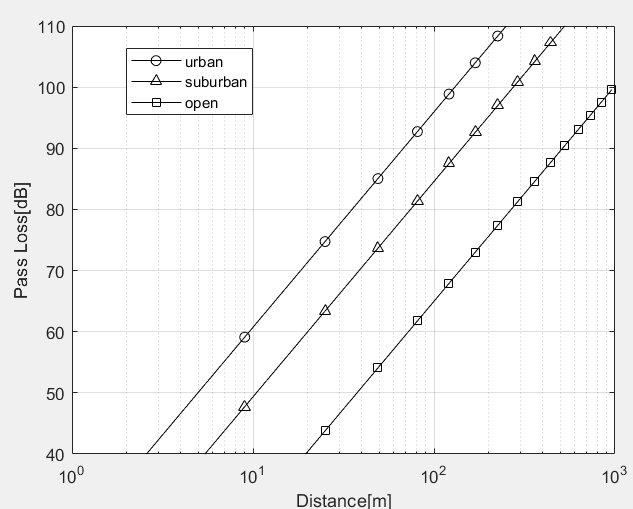
IEEE 802.16d模型
该模型属于对数正态阴影路径损耗模型。它的路径损耗为：
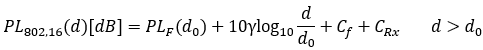
其中：
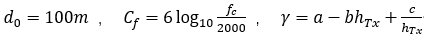
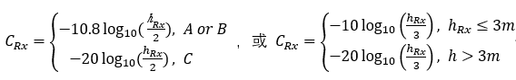
上述的a、b、c和A、B、C均是和场景有关的参数，根据郊区宏蜂窝(SMA)中收发端的障碍物密度来进行划分(ART和BRT分别代表屋顶上方和屋顶下方)：
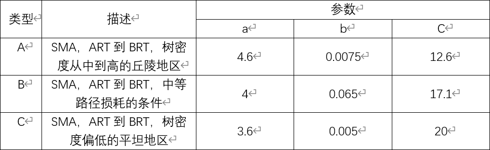
实际仿真时，该模型存在不连续的部分，需要修正。经研究后，原公式中的参考距离d0修正如下：
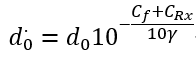
最终修正后的模型如下：
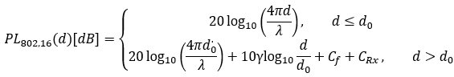